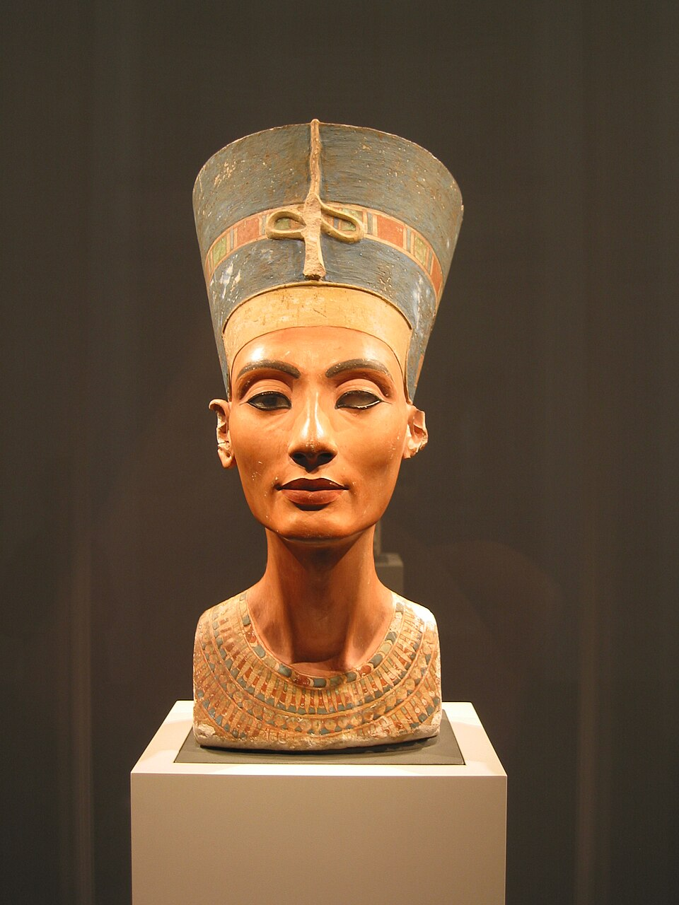

FILE A42-HS-049 // HISTORY & SOCIETIES
The Nefertiti Bust and the 1913 Export Dispute
ASSESSMENT: The bust’s removal is documented; whether it was misdeclared remains debated.
The painted limestone bust of Nefertiti was excavated at Tell el-Amarna in 1912 by a German-led team and transferred to Berlin in 1913. Egyptian authorities have argued that the division of finds was manipulated and the bust should be returned. The surviving records establish export and dispute, but not an undisputed proof of deliberate concealment.

.jpg){kind=link}
Claim and historical context
Ludwig Borchardt’s German excavation team uncovered the bust in the workshop of sculptor Thutmose. Under the partage system, excavated objects were divided between Egypt and the foreign expedition. The bust went to Berlin and was first publicly displayed in 1924, after years in private possession.
Chronology and primary record
The 1913 division list describes the piece in terms that critics say understated its importance. Borchardt’s diary and expedition documents are central to the controversy. The German side maintains that the allocation was lawful under the rules then in force.
What the record establishes
Egyptian antiquities officials and historians have questioned whether the bust was intentionally misrepresented to secure its export. The original agreement and later records have been examined publicly. Debate concerns the accuracy of the description and fairness of the colonial-era division, not the bust’s Egyptian origin.
Competing interpretations and counterevidence
The claim that Nazi authorities secretly hid the bust from Egypt is distinct from the 1913 transfer dispute and is not established by the evidence. Germany’s display history is documented. Current restitution arguments invoke cultural ownership and acquisition conditions, not a newly discovered forgery.
Calibrated verdict
The verdict is a documented colonial-era removal under a contested partage process. There is a credible dispute about description and informed consent, but no simple archival verdict. Avoid stating either fraud or fully informed approval as conclusively proven.
Evidence that could change this assessment
A complete original division protocol, authenticated diary entries, or independent eyewitness testimony about the selection could sharpen the conclusion. Any evidence of a deliberate false description must be placed against the excavation’s actual rules and contemporaneous practice.
Source notes and limitations
These selected records and named research sources address The Nefertiti Bust and the 1913 Export Dispute; each citation supports only the specific historical point identified in its note.
- Lauren Bearden, “Repatriating the Bust of Nefertiti: A Critical Perspective on Cultural Ownership,” Kennesaw Journal of Undergraduate ResearchAcademic article examining the partage record and competing cultural-ownership claims.
- JSTOR Open Artstor, “Bust of Queen Nefertiti, 1912–1928”Cataloged collection image documenting the bust’s modern display history.
- British Museum, “The Bust of Nefertiti: A Cautionary Tale”Museum discussion of the excavation and contested 1913 export.